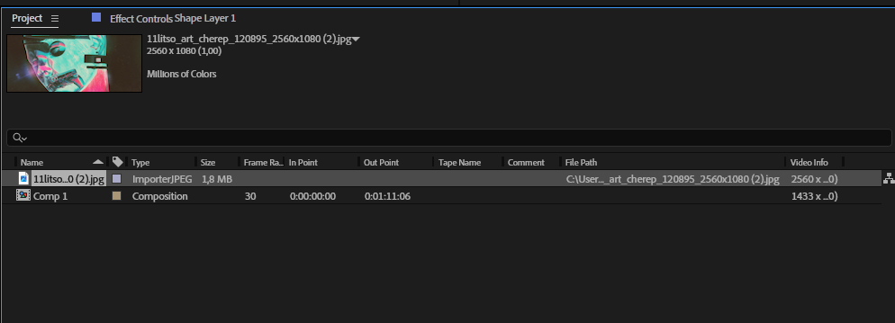
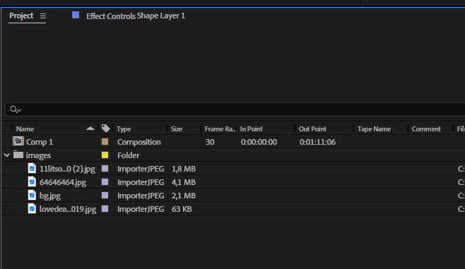
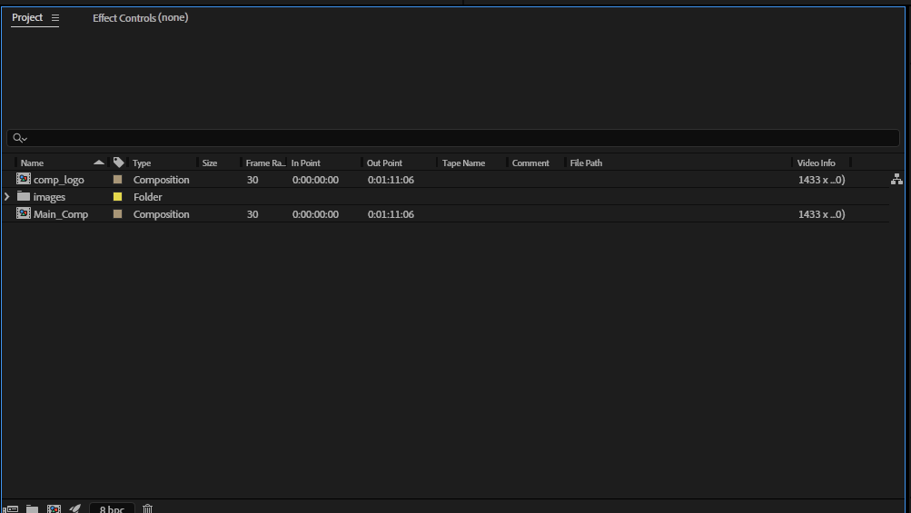
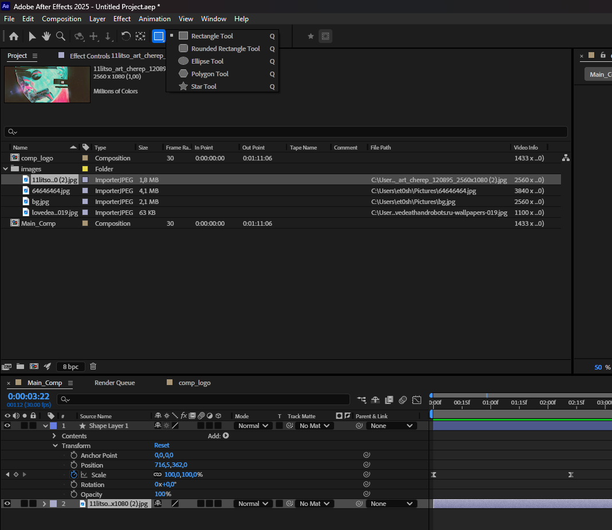
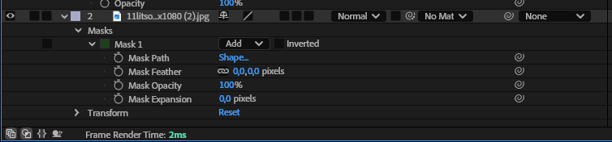
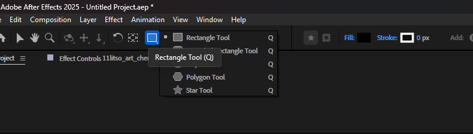
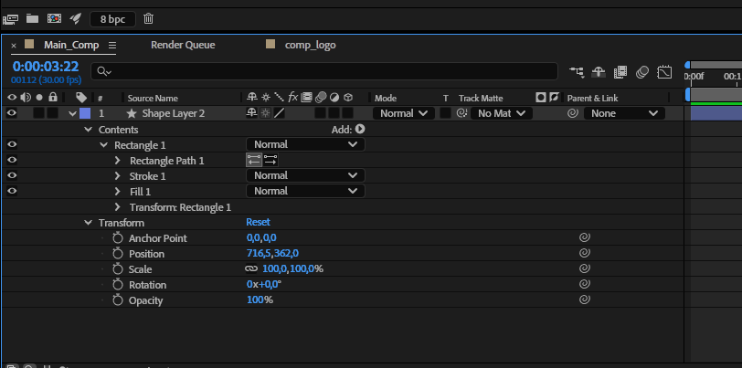
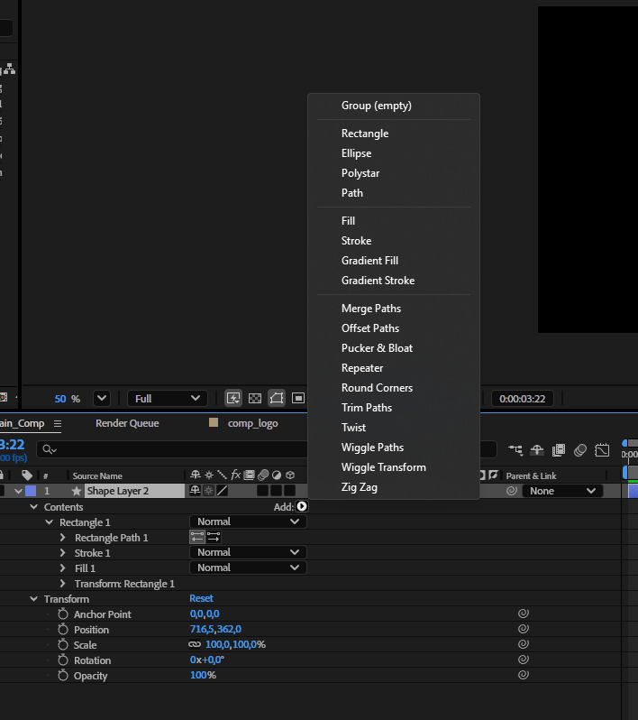
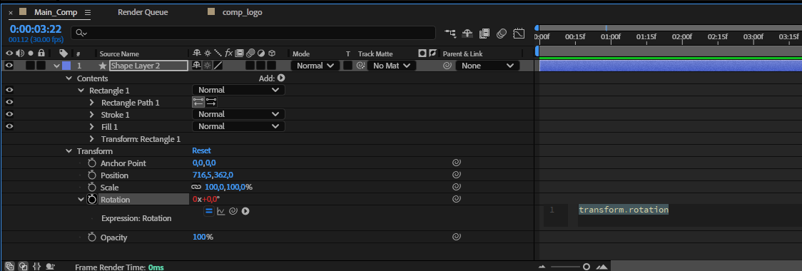
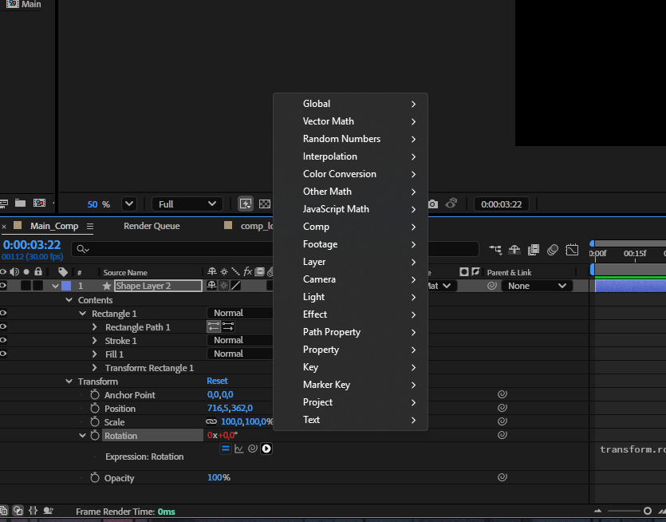

Импорт, маски, шейпы и экспрешены
В предыдущей теме мы создали композицию, разобрали слои и поставили первые ключевые кадры. Теперь подготовим исходную графику, научимся управлять её видимостью, создавать векторные элементы и автоматизировать отдельные свойства.
После занятия вы сможете импортировать многослойный файл, различать маску и Track Matte, работать с группами Shape Layer, применять основные модификаторы и читать простые выражения. Все инструменты объединены в практику: короткая анимация графической карточки.
Импорт: как подготовить материалы
Импорт добавляет материал в панель Project. Чтобы он появился в кадре, перетащите его из Project в открытую композицию или на Timeline. Один исходный файл можно использовать в нескольких слоях и композициях.
- Сложите исходные изображения, видео и звук в папку проекта.
- Выберите File → Import → File или нажмите Ctrl + I в Windows, Cmd + I в macOS. Файл также можно перетащить в Project.
- Для многослойного PSD или AI выберите подходящий режим Import As.
- Проверьте результат в Project, затем откройте импортированную композицию или добавьте материал в свою.

Footage или Composition?
Обычная фотография, видео или аудио импортируются как исходный материал. Для многослойной графики выбор режима определяет, сможете ли вы анимировать элементы отдельно.
| Import As | Что получается | Когда выбирать |
|---|---|---|
| Footage | Один элемент исходного материала: объединённое изображение или выбранный слой, в зависимости от настроек импорта. | Когда не нужна независимая анимация всех слоёв. |
| Composition | Композиция с отдельными слоями; границы импортированных слоёв соответствуют размеру документа. | Когда удобно работать со слоями в общей системе размеров исходного документа. |
| Composition - Retain Layer Sizes | Композиция с отдельными слоями, границы которых соответствуют содержимому каждого слоя. | Для анимации отдельных объектов; размеры слоёв и их опорные точки проще соотнести с самими объектами. |
После импорта PSD или AI как композиции откройте созданную композицию. Не собирайте её заново перетаскиванием всех исходников в пустую композицию: так можно потерять исходное расположение элементов.
Подготовка PSD и AI
- Разделите на слои элементы, которые должны двигаться независимо. В Illustrator проверьте верхний уровень Layers: несколько объектов внутри одного слоя не обязательно станут отдельными слоями After Effects.
- Назовите слои по содержанию: Logo, Title, Background. Удалите ненужные элементы и проверьте размер документа.
- После импорта сравните композицию с оригиналом. Сложные эффекты, оформление и особенности исходного приложения могут переноситься с отличиями.
- Для масштабирования импортированной векторной графики изучите переключатель Continuous Rasterization. Сам импорт AI не превращает слой автоматически в Shape Layer.
Поддержка форматов зависит от версии программы и кодеков. Если материал не импортируется, проверьте список поддерживаемых форматов Adobe. Расширение файла само по себе не гарантирует поддержку содержимого.
Dynamic Link позволяет связывать композиции After Effects с Premiere Pro без предварительного экспорта видео. Это отдельный способ работы; он не означает, что все настройки и эффекты двух программ взаимозаменяемы.
Организация и передача проекта
Папки в системе и папки в Project выполняют разные задачи. Первые хранят реальные файлы на диске, вторые упорядочивают элементы внутри проекта. Перемещение элемента в папку Project не переносит исходник на диске.

Для начала достаточно папок Footage, Audio, Graphics и Comps. Внутри Comps можно отдельно хранить Precomps. Названия условны: важно, чтобы структура была понятной и одинаково использовалась во всём проекте.
Главную композицию назовите Main_Comp или по задаче, например Card_Animation. Предкомпозиция является композицией, вложенной в другую композицию. Префикс Precomp_ может помочь её найти, но сам по себе ничего не меняет в работе программы.

Потерянные файлы и Collect Files
Файл .aep хранит структуру проекта и ссылки на исходные материалы. Если переименовать или переместить исходник на диске, After Effects может показать Missing Footage. Найдите соответствующий элемент в Project и укажите новый путь через Replace Footage → File. Затем проверьте композиции.
- Перед передачей сохраните проект.
- Выберите File → Dependencies → Collect Files.
- Выберите сбор всех исходников, если передаёте весь проект, и отдельную папку назначения.
- Откройте собранную копию .aep и убедитесь, что материалы доступны.
Collect Files собирает копию проекта и выбранных исходников. Шрифты и сторонние плагины могут потребовать отдельной установки на другом компьютере. Сохранение проекта и экспорт готового видео также остаются разными действиями.
Маска и Track Matte: что скрывает изображение
Маска представляет собой контур на конкретном слое. Она определяет, какие участки этого слоя видны. Track Matte, или подложка дорожки, использует другой слой как источник прозрачности или яркости. Например, текстовый слой может открыть изображение внутри букв.
Как создать маску
- Добавьте изображение в композицию и выделите его слой на Timeline.
- Выберите Rectangle Tool, Ellipse Tool или Pen Tool.
- Нарисуйте замкнутый контур в панели Composition.
- Раскройте Masks на выбранном слое и проверьте результат.
Инструменты фигур используются и для масок, и для шейпов. Чтобы создать маску на изображении, выделите его слой. Чтобы создать новый Shape Layer, снимите выделение со слоёв. На уже выбранном Shape Layer результат также зависит от режима инструмента: проверьте, создаёте ли вы фигуру или маску.


| Режим | Как влияет на видимость |
|---|---|
| Add | В простом случае одной маски показывает область внутри контура. Несколько масок Add добавляют области видимости. |
| Subtract | Вычитает область внутри контура из текущей области видимости. |
| Intersect | Оставляет пересечение с результатом масок, обработанных выше. Порядок масок имеет значение. |
| None | Контур не участвует в изменении прозрачности слоя, но остаётся доступным, например, для использования эффектами. |
| Inverted | Меняет внутреннюю и внешнюю области местами. Это переключатель, а не отдельный режим списка. |
| Свойство | Что изменяет |
|---|---|
| Mask Path | Форму и положение контура маски. Его вершины можно анимировать. |
| Mask Feather | Мягкость границы видимой области. |
| Mask Opacity | Степень влияния маски на прозрачность; результат зависит от её режима и других масок. Это не непрозрачность нарисованной линии контура. |
| Mask Expansion | Расширение или сужение области относительно контура. |
Для первого упражнения поставьте два ключа Mask Path: сначала контур за пределами изображения, затем в нужном положении. Сравните жёсткую границу с небольшим Mask Feather. Если меняете форму контура, старайтесь сохранять количество и порядок вершин, чтобы переход был предсказуемым.
Как использовать Track Matte
- Создайте изображение и отдельный текстовый или шейповый слой.
- На слое изображения найдите столбец Track Matte. Если его нет, переключите отображение столбцов через Toggle Switches / Modes.
- Выберите слой, который будет подложкой, и режим Alpha Matte.
- Анимируйте подложку и наблюдайте, как меняется видимая область изображения.
Alpha Matte использует прозрачность подложки, Luma Matte её яркость. В режиме Luma светлые области открывают изображение, тёмные скрывают. Для первого опыта используйте непрозрачную фигуру и Alpha Matte. В старых версиях After Effects подложку требуется разместить непосредственно над слоем изображения; в новых версиях источник выбирается отдельно.
Маска принадлежит своему слою; Track Matte использует отдельный слой. Выбирайте способ по задаче: простой контур удобно хранить в маске, а текст или сложную самостоятельную анимацию часто удобнее использовать как подложку. Подробнее о Track Matte в русской справке Adobe.
Шейпы: векторная графика внутри After Effects
Shape Layer содержит векторные контуры и их оформление. Из них можно собрать иконку, линию, плашку, диаграмму или графический переход. В одном слое может находиться несколько групп фигур.
- Снимите выделение со слоёв.
- Выберите инструмент фигуры или Pen Tool.
- Настройте Fill и Stroke в верхней панели.
- Нарисуйте фигуру и раскройте Contents нового Shape Layer.


Почему два Transform?
Transform группы меняет фигуру внутри слоя. Transform слоя меняет весь слой вместе со всеми его группами. Например, можно отдельно повернуть один лепесток внутри Contents, а затем повернуть весь цветок через Rotation слоя.
Параметрический Rectangle Path содержит Size и Roundness, Ellipse Path содержит Size. Произвольный контур Безье редактируется через вершины. Набор свойств зависит от типа контура. Заливка и обводка могут относиться к нескольким контурам внутри группы, поэтому структура не всегда выглядит как «один контур, одна заливка».
Перед анимацией прочитайте полный путь свойства: вы меняете Transform слоя, Transform группы или сам Path? Одинаковые названия Position и Scale на разных уровнях дают разные результаты.
Модификаторы шейпов
В меню Add внутри Contents можно добавлять контуры, оформление и операции над фигурами. Результат зависит от того, в какую группу добавлена операция и какие контуры находятся над ней. Если модификатор действует не на те элементы, сначала проверьте структуру Contents.

Trim Paths: рисование линии
Trim Paths задаёт видимую часть контура через Start, End и Offset. Для первого примера нарисуйте открытую линию Pen Tool, отключите Fill и включите Stroke. Добавьте Trim Paths в её группу и анимируйте End от 0% до 100%.
Start обрезает начало, End задаёт конец видимого участка, Offset сдвигает участок вдоль контура. На замкнутой фигуре с заливкой результат может отличаться от ожидаемого «рисования линии», поэтому начните с одной обводки.
Repeater: повторение элемента
Repeater создаёт повторения фигуры внутри Shape Layer. Copies задаёт их количество; Transform: Repeater определяет изменение между копиями. Например, Position [80, 0] размещает повторения с шагом 80 пикселей по горизонтали.
- Создайте небольшой круг.
- Добавьте Repeater в группу круга.
- Установите Copies = 5 и Position в Transform: Repeater = [80, 0].
- Измените Scale или Rotation повторителя и сравните результат.
Не путайте Transform: Repeater, Transform группы и Transform слоя. Первый меняет расположение повторений, второй исходную группу, третий весь слой.
Merge Paths: объединение и вычитание
Merge Paths выполняет операции над несколькими контурами в одной группе. Например, два перекрывающихся круга можно объединить или вычесть один из другого. Создайте контуры в общей группе, добавьте Merge Paths после них и сравните режимы Add, Subtract и Intersect. Для вычитания важен порядок контуров.
Этот модификатор работает с векторными контурами внутри Shape Layer. Он не объединяет произвольные слои Timeline в один слой.
| Операция | Для чего нужна |
|---|---|
| Offset Paths | Смещает границу контура наружу или внутрь; не копирует обводку. |
| Pucker & Bloat | Стягивает или раздувает контур относительно его центра. |
| Round Corners | Скругляет углы контура. |
| Twist | Закручивает контур вокруг центра. |
| Wiggle Paths | Создаёт изменяющуюся деформацию контура. |
| Wiggle Transform | Случайно изменяет параметры трансформации затрагиваемых фигур. |
| Zig Zag | Добавляет угловатые или плавные волны вдоль контура. |
Для этого занятия достаточно уверенно освоить Trim Paths и Repeater, затем попробовать Merge Paths. Остальные операции изучайте по конкретной задаче. Русская справка Adobe об операциях с контурами.
Экспрешены: выражения для свойств
Выражение вычисляет значение конкретного свойства. Оно может создавать движение без ключевых кадров, использовать уже заданную анимацию или связывать параметры разных слоёв. Выражения в After Effects используют синтаксис JavaScript и специальные объекты программы.
Ключевые кадры и выражения работают вместе. Например, value + 20 на Rotation прибавляет 20 градусов к значению, заданному вручную или ключами. Само слово value означает исходное значение текущего свойства до применения его выражения.
Как добавить и проверить выражение
- Выберите слой и раскройте нужное свойство.
- Удерживая Alt в Windows или Option в macOS, нажмите на секундомер этого свойства.
- Введите код в появившееся поле.
- Нажмите вне поля и запустите предпросмотр.
- Если появилось сообщение об ошибке, проверьте свойство, скобки, кавычки и названия слоёв.

Для временного отключения используйте переключатель выражения рядом с его полем. Не выключайте обычный секундомер анимации, если хотите сохранить ключевые кадры.
Кнопка меню языка выражений открывает список доступных объектов, свойств и методов. Alt / Option и щелчок по секундомеру включают поле выражения; само меню открывается отдельной кнопкой.

Постоянное вращение: time
Добавьте выражение в Rotation обычного двумерного слоя:
time * 100time измеряется в секундах композиции. При времени 0 секунд результат равен 0°, при 1 секунде 100°, при 2 секундах 200°. Это постоянная скорость 100 градусов в секунду. Если нужно сохранить исходное вращение, используйте value + time * 100.
Случайное движение: wiggle
Добавьте выражение в Position:
wiggle(2, 20)Первое число задаёт частоту колебаний, второе величину отклонения в единицах свойства. Для Position это пиксели. Получится плавное нерегулярное движение около исходного положения, которое также может быть задано ключами. Это не два резких скачка каждую секунду.
Один и тот же код на Rotation задаёт отклонение в градусах. Начните с небольшой амплитуды и сравните результат на разных свойствах.
Повторение ключевой анимации: loopOut
- Поставьте ключи Position в 0, 1 и 2 секунды.
- В первом и последнем ключе задайте одинаковое положение, а в среднем другое.
- Добавьте выражение в Position и посмотрите результат после последнего ключа.
loopOut("cycle")Выражение повторяет участок ключевой анимации после последнего ключевого кадра. Само по себе оно не создаёт движение. Совпадающие начальное и конечное положения помогают избежать скачка; для мягкого стыка проверьте также скорость около границы цикла.
Связь свойств и задержка
Инструмент связывания Pick Whip рядом с выражением позволяет сослаться на свойство другого слоя без ручного набора полного адреса. Сначала попробуйте связать Rotation двух слоёв.
Дополнительный пример: второй объект повторяет Position слоя Leader с задержкой в 5 кадров. Используйте два обычных двумерных слоя в одной композиции, без родительских связей и без разделения Position на отдельные координаты. Назовите ведущий слой точно Leader, поставьте ему ключевые кадры и добавьте следующий код в Position второго слоя:
var delay = framesToTime(5);
thisComp.layer("Leader").transform.position.valueAtTime(time - delay);framesToTime(5) переводит 5 кадров в секунды с учётом FPS композиции. valueAtTime читает значение свойства в указанное время. Второй объект повторяет траекторию ведущего с задержкой и получает его координаты, без собственного постоянного смещения.
Если у слоёв разные родители или смешаны 2D и 3D, координаты нельзя напрямую считать равнозначными. Такой случай требует преобразования координат и выходит за рамки первого упражнения.
Для проверки кода используйте русскую справку Adobe о выражениях. Дополнительные примеры собраны в русскоязычной подборке Balyberdin; перед применением определите, для какого свойства и устройства слоёв написан каждый пример.
Дополнительные инструменты: Motion Tools
Панели для After Effects помогают быстрее задавать плавность ключевых кадров, размещать опорные точки и выполнять повторяющиеся действия. Их имеет смысл использовать после освоения стандартных инструментов.
По ссылке курса сейчас доступен бесплатный Motion Tools Classic. Существующее видео посвящено Motion Tools Pro, поэтому название, интерфейс и возможности могут отличаться. Установка панели не обязательна для практики этой лекции.
Практика: анимированная графическая карточка
Соберите короткую карточку с изображением, названием и графическими элементами. Используйте композицию 1920 × 1080, 30 fps, длительностью 5 секунд. Задача состоит в том, чтобы связать инструменты с понятными действиями: открыть изображение, провести линию, повторить элемент и организовать движение.
- Импортируйте изображение или многослойный PSD / AI. Если используется многослойный файл, выберите режим Composition и проверьте независимость нужных слоёв.
- Разложите материалы по папкам Project и дайте основной композиции и слоям понятные имена.
- Откройте изображение анимированной маской. Затем сделайте альтернативный вариант через отдельный Shape Layer и Alpha Matte; сравните устройство двух вариантов.
- Создайте линию без заливки и анимируйте её появление через Trim Paths.
- Добавьте небольшой элемент и повторите его через Repeater. Подберите шаг и количество копий под композицию кадра.
- Добавьте одно осмысленное выражение: постоянное вращение, небольшое колебание или повторение уже созданной анимации. Укажите, к какому свойству оно относится.
- Проверьте начало, середину и конец анимации. Текст должен оставаться читаемым, а движение помогать последовательности появления элементов.
- Сохраните проект, выполните Collect Files в отдельную папку и откройте собранную копию для проверки.
На обсуждении покажите структуру проекта и объясните выбор маски или Track Matte, уровень Transform, на котором вы работали, и результат выражения. Саму анимацию оцените по ясности, ритму и связи движения с содержанием.
Если результат отличается от ожидаемого
| Что произошло | Что проверить |
|---|---|
| Вместо маски появился новый Shape Layer | Выбран ли слой изображения перед рисованием. |
| Двигается весь шейповый слой | Не перепутан ли Transform слоя с Transform нужной группы. |
| Trim Paths не рисует ожидаемую линию | Контур, Stroke, отключение Fill и расположение Trim Paths в Contents. |
| Repeater повторяет лишние элементы | Какие контуры находятся в затронутой группе над оператором. |
| loopOut не даёт повторения или заметен скачок | Наличие ключей, выбранное свойство, время после последнего ключа и стык цикла. |
| Выражение сообщает об ошибке | Имя слоя, тип свойства, количество координат, скобки и обычные прямые кавычки. |
| После передачи не найдены исходники | Открыта ли собранная копия проекта и собраны ли нужные материалы. |